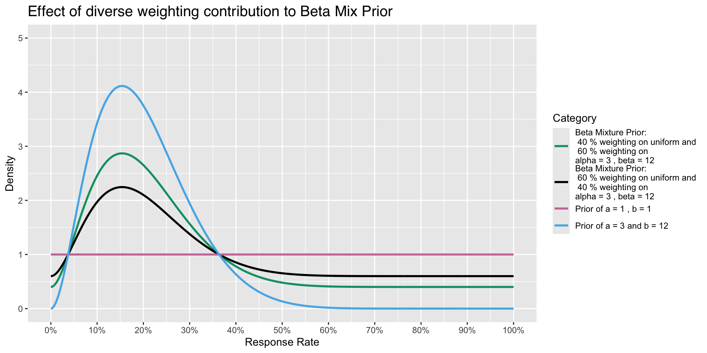
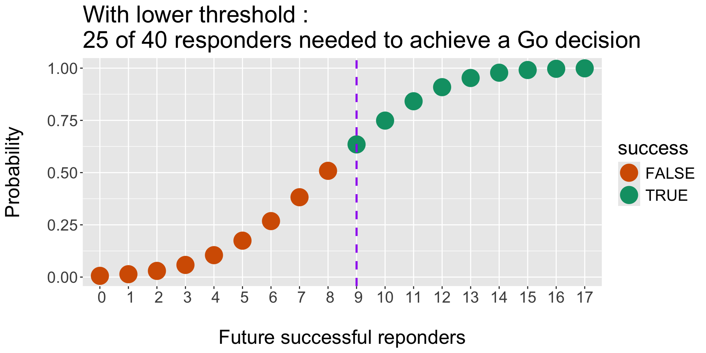

Error in utils::download.file(url, path, method = method, quiet = quiet, :
download from 'https://api.github.com/repos/Genentech/phase1b/tarball/HEAD' failedPractical Bayesian Statistics
Audrey Yeo
Thursday, March 27
08:00
DAGStat 2025
Berlin, Germany
Practical Bayesian Statistics?
A gentle refresher on probability theory, Bayesian Framework and Intuition for effective application in Biostatistics
- Build a simple Bayesian Model
- Test out different Priors
- Infer from different Posteriors
- Discussing ideas for your own work
Agenda
What’s covered
- Proper Priors
- Discrete endpoints
- Credible Interval
- Posterior Probability
- Predictive Posterior Probability
- if time permits, discussion on example applications
What’s not covered
- Improper Priors
- Continuous endpoints
- Complex simulation
- Comparison with hypothesis testing using Bayes Factors
Intro myself


Intro myself


Career
joined R & D at Roche in mid 2022 :
- Biostats Lead in Early Oncology Trials
- Study Statistician for phase I-II, phase III trials
- Led Roche/Genentech Dose Escalation on new SCE
- Led the development of R package phase1b
- Instructor for Julia Course Basel (Data Science, Quarto, ML modules)
- Co-organiser and Presenter many Methodology seminars
phase1b’s world debut in 2024 :- PSI 2024
- useR!2024
- R/Pharma 2024
- Effective Statistician conference
- BMS, UBC, Roche/ Genentech
A starting example
\[P( awake\ | \ coffee ) \]
\[P( awake \ | \ coffee + enthusiasm )\]
\[P( awake \ | \ coffee + enthusiasm + breakfast )\]
Everything is a distribution
Upon visual inspection, increase sample sizes leads to
- Better precision
- Estimates and Credible Interval are more precise
These are benefits of the Bayesian paradigm
Using priors to improve precision
- Priors that incorporate higher \(\alpha\) and \(\beta\) parameters influence the posterior, given data stays the same (16 / 23 responders in likelihood)
Quiz
- Increased sample size in prior information can improve precision of credible intervals
Different Perspective : neither are wrong
| Example | Frequentist | Bayesian |
|---|---|---|
| \(\theta\) | Known and fixed according to some distribution | A random variable we can infer from some distribution |
| Model or Distribution | Build a model, e.g. Likelihood using data | P(\(\theta\) | data, prior ) |
| Method | OLS, Maximum Likelihood | prior multiplied by likelihood |
| Inference | via hypothesis testing | P(\(\theta\) > \(\theta_{c}\) | data, prior ) |
| What is the probability of a fair coin toss ? | Since we toss this n times, it would converge to 0.5 | it’s 0 or 1 |
A Bayesian model looks like the Bayes Thereom or Bayes Rule
For Event A and B :
\[ 0 < P(A) < 1\]
\[ P(B) > 0\] \[ {P( B | A)} = { {P(A|B)P(B)} \over {P(A) } } \] Law of Total probability
\[P(A) = \sum_{i=1}^{n} P(A \cap B_i)\]
Using the definition of conditional probability, we can rewrite this as:
\[P(A) = \sum_{i=1}^{n} P(A | B_i) P(B_i)\] \[ P(A) = \sum_{i=1}^{n} P(A \cap B_i) = \sum_{i=1}^{n} P(A | B_i) P(B_i)\]
\[P(A) = P(A | B_1) P(B_1) + P(A | B_2) P(B_2) + P(A | B_3) P(B_3)\]
Motivating example for Biostatistics
\[ Sensitivity = P(T^{+} \ | \ D^{+} \ ) = True \ Positive \ rate \] \[ Specificity = P(T^{-} \ | \ D^{-} \ ) = True \ Negative \ rate \] \[ 1 - Sensitivity = P( T^{-} \ | \ D^{+} \ ) = False \ Negative \ rate \] \[ 1- Specificity = P(T^{+} \ | \ D^{-} \ ) = False \ Positive \ rate \]
Normalising constant : 1 less worry in your life
\[ P(A|B) = { {P(B | A) P (A)} \over { P(B)} } \] \[ P(A|B) = {P(B | A) \over P(B) } + {P (A) \over P(B) } \] \[ P(A|B)*P(B) = {{P(B | A)}} * { P (A)} \]
Demonstration only : Law of Total Probability
\[ P(B) = 1 = P(B|A_1)P(A_1) + P(B|A_2)P(A_2) + P(B|A_3)P(A_3) \] \[ P(A|B)*1 = P(B | A) + P (A) \]
\[ Posterior \ \propto \ Likelihood \ Prior\]
Let’s look at a Biostatistics example
Biostatistics solution I
Biostatistics solution II
Common use of Bayesian Statistics
Modeling transmission mechanism to infer treatment efficacy of different drugs and combination therapy against Trichuris trichiura by Grolimund et al (2024)
As an example, we elaborate on 2.
Modeling Egg Counts:
\[Y_{i_{jgds}}^{(0)} \sim NB(\mu_{i_{jgd}}^{(0)}, k^{(0)})\]
At baseline, egg counts are assumed to follow a negative binomial distribution.
Mean \(\mu\) egg count was modeled by the gamma distribution.
\[ \mu \sim \ Gamma ( \mu_{jg}^{0}, \sigma_{jg}^{0}, \sigma_{jg}^{0} ) \]
The parameters used for the gamma distribution were:
For \(\mu_{jg}^{(0)}\) (mean egg count): a gamma distribution with a mean of 50 and a variance of 1250
For \(\sigma_{jg}^{(0)}\) (standard deviation of egg count): an exponential distribution with a mean of 0.5 and a variance of 0.25.
For \(\sigma_{jg}^{(0)}\) a gamma distribution with mean 1 and variance 1
The Conjugate Prior
Merriam-Webster Dictionary on “conjugate” : coupled, connected, or related.
\[ {P( B | A)} = { {P(A|B)P(B)} \over {P(A) } } \]

Choices
Summary table from Likelihood and Bayesian Inference from Held & Sabanés Bové (2020)
Quiz 2
\(\pi\) or Response Rate can be modeled by the Beta Distribution
About phase1b
2015 : Started as a need in Roche’s early development group, package development led by Daniel Sabanés Bové in 2015.
2023 : Refactoring, Renaming, adding Unit and Integration tests as current State-of-Art Software Engineering practice.
100% written in R and Open Source.
website : genentech.github.io/phase1b/
Use case:
| Example | Interim | Final |
|---|---|---|
| Responders | 16 | 23 |
| n | 23 | 40 |
| Response rate | 69.57 % | 57.5 % |
| Posterior probability* | ask phase1b | ask phase1b |
| Predictive posterior probability* | ask phase1b | - |
| Decision to develop molecule further : Go/Stop/Grey Zone | ask phase1b | ask phase1b |
Prior and Posterior of Beta Distribution for \(\pi\)
- Conjugate Prior is \(f(\pi)\), where \(\pi \sim {Beta(\alpha, \beta)}\), same family of distribution of Posterior
- We know the mean response rate (RR) is : \[\pi = \ \frac {\alpha}{\alpha + \beta}\]
- Likelihood is \(f(x|\pi)\), where \(x \sim {Binomial(x, n)}\)
- The updated Posterior \(f( \pi | x )\) is again a \(Beta\) distribution (same family as prior) : \[ \pi| \ x \sim Beta(\alpha + x, \ \beta + n - x)\] where \(x\) is the number of responders of current trial
- Posterior Probability :
\(P (\pi > 60 \% | \alpha + x, \beta + n - x )\) - Predictive Posterior Probability :
\(P (success \ or \ failure \ at \ final)\)
try it yourself :
Parameters:
- Historical trial showed result of 1 of 3 responders
- we then set alpha = 1, beta = 2
- expected mean for prior distribution = 1 / 1 + 2
- Current experiment has 16 / 23 responders
- expected mean for posterior distribution = 1 + 16 / 17 + 2 + 23 - 16
- this mean is 17 / 17 + 9 ≈ 65 %
Quiz 3
The expected value of mean in the Beta Distribution is/are :
Posterior formulation :
\[ f(\pi | x) \propto \ \pi^{x} (1-\pi)^{n-x} * \frac {1}{B(\alpha, \beta)} \pi^{\alpha-1}(1-\pi)^{\beta-1} \]
- (weighted sum version)
\[ f(\pi | x) \propto \ \pi^{x} (1-\pi)^{n-x} * \sum_{j = 1}^{k} \ w_j \frac {1}{B(\alpha_j, \beta_j)} \pi^{\alpha_j-1}(1-\pi)^{\beta_j-1} \]
Updating the Posterior
Using the formula for the mean, mode and median, where :
\(\alpha = 0.6, \beta = 0.4\) and
interim x = 16, interim n = 23 :
\[ \pi = \ \frac {\alpha}{\alpha + \beta} = \ \frac {\alpha_{updated} }{\alpha_{updated} + \beta_{updated}} = \ \frac {16.6 }{16.6 + 7.4} ≈ 69.17 \% \]\[ mode (\pi) = \ \frac {\alpha_{updated} -1 }{\alpha_{updated} + \beta_{updated} - 2} = \ \frac {16.6 -1 }{16.6 + 7.4 - 2} ≈ 70.90 \% \] \[ median ( \pi) ≈ \ \frac {\alpha_{updated}}{ \alpha_{updated} + \beta_{updated} - \frac{2}{3} } ≈ 69.71 \% \]
Graphical representation of the updated Posterior
- Prior parameters are \(\alpha\) = 0.6, \(\beta\) = 0.4
- Updated Posterior parameters are \(\alpha\) = 16.6 and \(\beta\) = 7.4
Effect on varying weight on different priors Example
A variety of Priors
- To illustrate how density of Prior changes with increased sample size even though mean is the same

A variety of Posteriors
- To illustrate how density of Posterior changes with increased sample size even though mean is the same
postprob() example (Lee & Liu, 2008)
| Example | Interim |
|---|---|
| Responders | 16 |
| n | 23 |
| Response rate | 69.57 % |
| Standard of Care Response rate | 60 % |
| Posterior probability | postprob( ) call from phase1b |
Posterior Probability
- Interim trial is efficacious if posterior probability exceeds 70% or P( RR ≥ 60 % | data ) > 70%
Beta prior mixture
phase1bfacilitates the flexibility of using various priors and its respective weightings:Prior is P_E ~ sum(weights * beta(parE[, 1], parE[, 2]))
a = phase1b::postprob(x = 16,
n = 23,
p = 0.60,
parE = c(0.6, 0.4), weights = 1)
b = phase1b::postprob(x = 16,
n = 23,
p = 0.60,
parE = c(2, 4), weights = 1)
0.5*(a + b)[1] 0.7187072
phase1b::postprob(x = 16,
n = 23,
p = 0.60,
parE = rbind(c(0.6, 0.4), c(2, 4)), weights = c(0.5, 0.5))[1] 0.7406505
- Posterior formulation :
\[ f(\pi | x) \propto \ \pi^{x} (1-\pi)^{n-x}\sum_{j = 1}^{k} \ w_j \frac {1}{B(\alpha_j, \beta_j)} \pi^{\alpha_j-1}(1-\pi)^{\beta_j-1} \]
predprob() example (Lee & Liu, 2008)
| Example | Interim |
|---|---|
| Responders | 16 |
| n | 23 |
| Response rate | 69.57 % |
| Standard of Care Response rate | 60 % |
| Predictive Posterior probability | predprob( ) call from phase1b |
control = 0.6
confidence_seventy = 0.7
result <- phase1b::predprob(
x = 16, n = 23, Nmax = 40, p = control, thetaT = confidence_seventy,
parE = c(0.6, 0.4)
)
result$result[1] 0.8211011confidence_ninety = 0.9
result_high_thetaT <- phase1b::predprob(
x = 16, n = 23, Nmax = 40, p = control, thetaT = confidence_ninety,
parE = c(0.6, 0.4)
)
result_high_thetaT$result[1] 0.5655589Predictive Posterior Probability (Lee & Liu, 2017)
\[ \sum_{i = 0}^{m} P( Y = i \ | \ x ) . I\ (Prob ( P > p_{0} \ | x, Y = i) > \theta_{T}) \]
\[ = \sum_{i = 0}^{m} \{ P( Y = i \ | \ x ). I\ ( B_{i} > \theta_{T} \} = \sum_{i = 0}^{m} P( Y = i \ | \ x ) . I_{i} \]
Predictive Posterior Probability (PPP)
\[ PPP = \sum_{i = 0}^{m} \{ P( Y = i \ | \ x ). I\ ( B_{i} > \theta_{T} \} = P(RR \ at final \ > 60 \%) > 70 \% \]
# The original Lee and Liu (Table 1) example:
# Nmax = 40, x = 16, n = 23, beta(0.6,0.4) prior distribution,
# thetaT = 0.7. The control response rate is 60%:
results <- phase1b::predprob(
x = 16, # current number of responders
n = 23, # sample size at interim
Nmax = 40, # max sample size
p = 0.6, # control response rate
thetaT = 0.7, # confidence
parE = c(0.6, 0.4) # prior alpha and beta
)$result
[1] 0.8211011
$table
counts cumul_counts density posterior success
1 0 23 0.0000 0.005858397 FALSE
2 1 24 0.0000 0.013782046 FALSE
3 2 25 0.0001 0.029584325 FALSE
4 3 26 0.0006 0.058130376 FALSE
5 4 27 0.0021 0.104881818 FALSE
6 5 28 0.0058 0.174328134 FALSE
7 6 29 0.0135 0.267887754 FALSE
8 7 30 0.0276 0.382146405 FALSE
9 8 31 0.0497 0.508508727 FALSE
10 9 32 0.0794 0.634871049 FALSE
11 10 33 0.1129 0.748893301 TRUE
12 11 34 0.1426 0.841482798 TRUE
13 12 35 0.1587 0.908912106 TRUE
14 13 36 0.1532 0.952764733 TRUE
15 14 37 0.1246 0.978098514 TRUE
16 15 38 0.0811 0.991013775 TRUE
17 16 39 0.0381 0.996776597 TRUE
18 17 40 0.0099 0.999003945 TRUE[1] 0.8211Predictive Posterior Probability
Predictive Posterior Probability is the Posterior probability of additional responders.
(Note : 40 - 23 = 17 remaining patients. Potentially 16 + 17 responders at final = 33)

Operating Characteristics : Monte Carlo Simulations and threshold for Success (and Failure)
- Efficacy criteria, e.g. we would stop for Efficacy (Success) if :
Pr( RR > p1) > tU - Futility criteria, eg. we would stop for Futility (Failure) if :
Pr( RR < p0) > tL
Rules and Operating characteristics. A use case for ocPostprob():
- Stop for Efficacy: Go if \(P( \pi > 60\% | \ data ) > 90 \%\)
- Stop for Futility: Stop if \(P( \pi < 60\% | \ data ) > 70 \%\)
- Prior of treatment arm \(Beta(0.6, 0.4)\).
Results
| ExpectedN | PrStopEarly | PrEarlyEff | PrEarlyFut | PrEfficacy | PrFutility | PrGrayZone |
|---|---|---|---|---|---|---|
| 34 | 36.8 % | 8.8 % | 28 % | 11 % | 40 % | 49 % |
At n = 34, we have some useful results (we did not have to evaluate 40!)
1/3 of results are known at interim, most of these results are in the Gray Zone
~ 1/2 of results are also at the Gray Zone at final
Expanded features
…. and wiggle room!
| SOC uncertainty | single-arm | two-arm | simulation | plotting | boundaries | |
|---|---|---|---|---|---|---|
| postprob | ✔️ | |||||
| postprobDist | ✔️ | ✔️ | ||||
| predprob | ✔️ | |||||
| predprobDist | ✔️ | ✔️ | ||||
| ocPostprob | ✔️ | ✔️ | ||||
| ocPostprobDist | ✔️ | ✔️ | ✔️ | |||
| ocPredprob | ✔️ | ✔️ | ||||
| ocPredprobDist | ✔️ | ✔️ | ✔️ | |||
| ocRctPostprobDist | ✔️ | ✔️ | ✔️ | ✔️ | ||
| ocRctPredprobDist | ✔️ | ✔️ | ✔️ | ✔️ | ||
| plotBeta | ✔️ | ✔️ | ||||
| plotDecision | ✔️ | |||||
| plotOc | ✔️ | |||||
| plotBounds | ✔️ | |||||
| boundsPostprob | ✔️ | |||||
| boundsPredprob | ✔️ |
Some references
Held L & Sabanés Bové D (2020) Likelihood and Bayesian Inference : Applications in Medicine and Biology, 2nd Edition.
LeSaffre E & Lawson A (2012) Bayesian Biostatistics, First Edition,
Thall P F, Simon R (1994), Practical Guidelines for Phase IIB Clinical Trials, Biometrics, 50, 337-349.
Lee J J, Liu D D (2008), A Predictive probability design for phase II cancer clinical trials, 5(2), 93-106, Clinical Trials.
Yeo, A T, Sabanés Bové D, Elze M, Pourmohamad T, Zhu J, Lymp J, Teterina A (2024). Phase1b : Calculations for decisions on Phase 1b clinical trials. R package version 1.0.0, https://genentech.github.io/phase1b
Inclusive Speaker Orientation Linux Foundation
Zeileis, Fisher, Hornik, Ihaka, McWhite, Murrell, Stauffer, Wilke (2020) colorspace: A Toolbox for Manipulating and Assessing Colors and Palettes. Journal of Statistical Software.
Thanks DAGStat 2025
etc
Appendix: Updating the Beta Distribution or modeling the Posterior
Current data we have
x = number of responses n = sample size at time of evaluation
Steps
- To update alpha : alpha plus x
- To update beta : beta plus n and minus x
- Plot new graph with updated alpha and updated Beta
What am I seeing
- Notice the shape and bulk of curve
- Notice the variation
- Does the updated model make sense ?
7th Joint Statistical Meeting of the Deutsche Arbeitsgemeinschaft Statistik